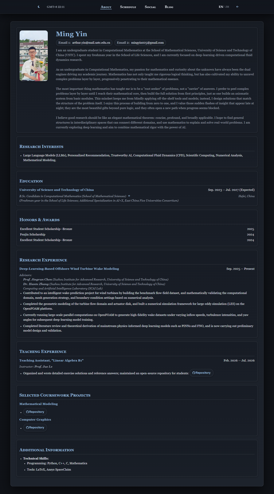
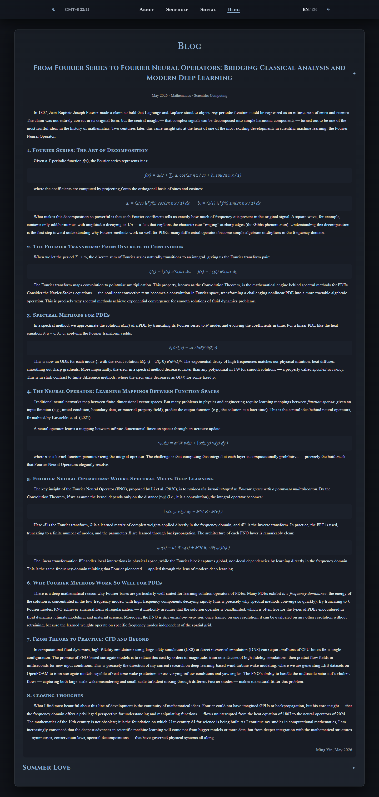
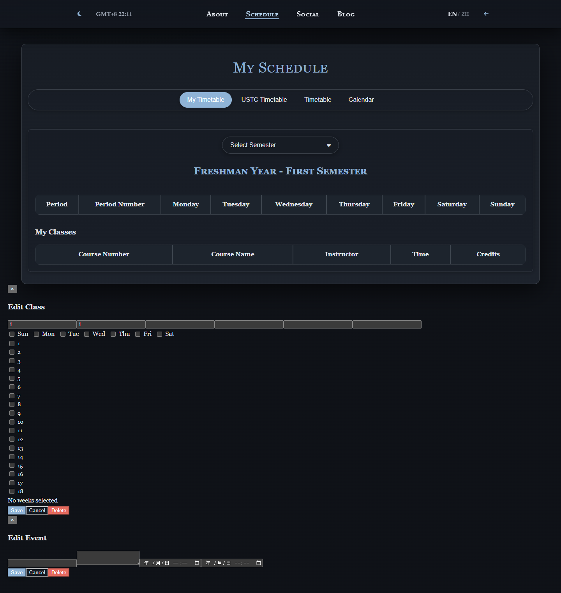

算法基础第一次大作业
使用 AI Agent 辅助搭建个人主页与撰写技术博客 · 实验报告
一、个人主页介绍
1.1 主页访问链接
主页地址：https://arthur0025.github.io
主页部署于 GitHub Pages，支持 HTTPS 访问，在 Chrome、Edge、Firefox 等主流浏览器中均可正常显示。
1.2 主页主要内容
个人主页以单页应用（SPA）形式组织，包含以下页面模块：
- 封面页（Cover）：随机背景图、个人头像、姓名（Arthur.yin）和随机格言，滚动或点击箭头进入内容区。
- 关于页（About）：个人简介、研究兴趣（LLM、CFD、科学计算等）、教育背景、荣誉奖项、科研经历（基于深度学习的海上风机尾流建模）、教学经历、课程设计项目（数学建模、计算机图形学）、技术能力。
- 日程页（Schedule）：基于 FullCalendar 的课程表，支持按学期/周次筛选。
- 社交页（Social）：各平台社交链接汇总（GitHub、Bilibili、YouTube、X 等）。
- 工具箱页（Toolkit）：学术工具集合，按类别筛选。
- 博客页（Blog）：博客文章列表，包含技术博文与文学创作。
1.3 页面结构与功能说明
| 功能 | 说明 |
|---|---|
| 导航系统 | 顶部固定导航栏，支持 About / Schedule / Social / Blog 四个页面间切换，带有返回封面按钮 |
| 中英双语 | 导航栏语言切换按钮（EN/ZH ↔ 英/中），About 与 Blog 页面内容完整双语化 |
| 深色/浅色主题 | 一键切换，所有页面及 FullCalendar 组件均适配 |
| 实时时钟 | 固定显示 GMT+8 时间，支持折叠 |
| 自定义光标 | 多套光标样式，交互元素有独立光标反馈 |
| 响应式布局 | CSS 媒体查询适配桌面、平板、手机，封面和内容区均自适应 |
| 路由系统 | 基于 History API 的 SPA 路由，/about、/schedule、/social、/meditations 各路径独立可访问 |
| Easter Egg | 封面头像点击触发漩涡动画进入隐藏叙事页面 |
二、博客内容介绍
2.1 博客主题
博客主题属于"数学"类别，标题为："从傅里叶级数到傅里叶神经算子：连接经典分析与现代深度学习"（From Fourier Series to Fourier Neural Operators: Bridging Classical Analysis and Modern Deep Learning）。
2.2 主要内容概述
博文以傅里叶分析的历史发展为线索，串联起经典数学与现代深度学习，共分 8 个章节：
- 傅里叶级数：分解的艺术 — 从 1807 年傅里叶的原始洞见出发，介绍正交分解与 Gibbs 现象
- 傅里叶变换：从离散到连续 — 周期趋于无穷时的自然过渡，卷积定理的意义
- PDE 的谱方法 — 傅里叶基在数值求解偏微分方程中的应用，谱精度概念
- 神经算子：学习函数空间之间的映射 — 从有限维向量空间到无限维函数空间的范式转换
- 傅里叶神经算子（FNO） — 卷积定理如何将核积分转化为频域逐点乘法
- 为什么傅里叶方法对 PDE 有效 — 低频主导、带限正则化、离散化不变性
- 从理论到实践：CFD 及更多 — 结合个人在风机尾流建模中的研究实践
- 总结 — 数学思想的跨世纪连续性，以及对科学机器学习的展望
博文内容体现了个人对计算数学与 AI 交叉领域的思考，尤其是结合自身在基于深度学习 CFD 方向的研究经历，探讨了 FNO 在湍流多尺度建模中的应用前景。
2.3 博客访问方式
通过个人主页顶部导航栏点击 "Blog"（博客） 按钮即可进入博客页面。博客页面列出所有文章，点击标题或展开箭头即可阅读全文。默认展开最新技术博文，方便首次访问者直接阅读。
直接链接：https://arthur0025.github.io/meditations/
三、实现过程
3.1 使用的主要工具与技术
| 类别 | 工具/技术 |
|---|---|
| 前端 | HTML5, CSS3 (CSS Variables, Flexbox, Grid, Media Queries), Vanilla JavaScript (ES6+) |
| 第三方库 | FullCalendar 5.11.3 (课程表), Font Awesome 6.4 (图标), Google Fonts (字体) |
| 版本控制 | Git + GitHub |
| 部署 | GitHub Pages |
| AI Agent | Claude Code (CLI), Claude Agent SDK (VSCode 插件) |
| 统计 | GoatCounter (访问统计) |
| IDE | Visual Studio Code |
3.2 网页搭建与部署过程
- 初步搭建：在作业发布前，使用纯 HTML/CSS/JS 搭建了个人主页基本框架，包括封面页、简历页、社交页、工具箱页、日程页和导航系统。
- 主题与国际化：实现了 CSS Variables 驱动的深色/浅色主题切换，以及基于 JavaScript 的中英双语动态切换（通过替换 innerHTML 实现）。
- 路由系统：基于 History API（pushState / popState）实现了 SPA 路由，/about、/schedule、/social、/meditations 均可直接访问。
- 博客补充：在 Claude Code 的辅助下，将原有的 "Meditations"（沉思录）页面改造为博客页，新增技术博文的英文与中文版本。
- 部署：通过 Git 推送至 GitHub 仓库的 main 分支，GitHub Pages 自动构建部署。
3.3 遇到的问题及解决方法
- PDF 阅读问题：AI Agent 环境中缺少 pdftotext 工具，无法直接提取 PDF 文本。解决方式：将作业要求整理为 Markdown 文件供 AI 阅读。
- LaTeX 转义问题：技术博文中含有大量 LaTeX 数学表达式（如 \xi, \cdot, \partial, \mathbf{u} 等），在 JavaScript 模板字面量中 \x、\u、\b、\f 等被解释为转义序列导致语法错误。解决方式：使用 Unicode 数学符号替代 LaTeX 命令，避免转义冲突。
- 中英双语状态下展开状态保持：切换语言时，Expander 的展开/折叠状态需要跨语言保持。通过 data-expand-key 属性和 sessionStorage 实现了状态持久化。
四、AI Agent 使用说明
4.1 使用的 AI 工具
本次作业主要使用 Claude Code（Anthropic 官方 CLI AI Agent 工具），运行于 VSCode 扩展环境中。Claude Code 具备文件读写、代码搜索、命令执行、多 Agent 协作等能力，适合作为编程辅助工具。
4.2 AI 辅助完成的内容
| 内容 | AI 贡献 | 本人贡献 |
|---|---|---|
| 技术博文写作 | 根据指定主题生成英文全文初稿，润色语言表达 | 确定博客主题方向（Fourier→FNO），提供研究背景上下文，审核数学准确性，完成中文翻译 |
| 博客页面重构 | 将 meditations_EN.js 和 meditations_ZH.js 从单一诗歌展示重构为博客列表结构 | 确定页面结构方案（展开式博客列表），审核代码逻辑 |
| CSS 样式补充 | 为博客元数据、数学公式展示、章节标题新增 CSS 规则 | 确认样式与现有设计系统一致 |
| 导航标签更新 | 修改 Top-nav.js 和 Translate.js 中的导航标签（Meditations→Blog） | — |
| 实验报告撰写 | 根据作业要求模板生成本报告 HTML 文件 | 提供实现细节、问题与思考等真实内容 |
4.3 对 AI 生成内容的修改
- 数学内容核实：AI 生成的博文中涉及傅里叶级数、FNO 架构等技术内容，本人逐段审核了数学表述的准确性，确保没有事实性错误。
- 个人研究关联：第 7 章"CFD 及更多"中融入了本人在风机尾流建模中的实际研究经历，使博客内容更具个人特色而非泛泛而谈。
- 代码合理性检查：AI 生成的 JavaScript 代码中，模板字面量的 LaTeX 转义问题由本人发现并提出解决方案（改用 Unicode 符号）。
- 中文翻译：技术博文的中文版本由 AI 生成初稿后，本人进行了术语校对和语言风格调整，使其更符合中文数学写作习惯。
4.4 对 AI 辅助编程的思考
通过本次作业，我对 AI Agent 辅助编程有以下认识：
- 效率提升显著：AI 在代码生成、内容撰写、样式调整等重复性工作中效率极高。一篇约 1200 词的数学技术博文从构思到中英双语完成的耗时从数小时缩短到数十分钟。
- "人在回路"不可替代：AI 擅长执行明确的指令，但方向性决策（博客选什么主题、页面用什么结构）需要人来做出。此外，AI 在数学内容上可能出现细微的不准确，需要人工核实。
- 上下文管理是关键：大型项目中，如何让 AI 充分理解现有代码结构和设计约定直接影响输出质量。合理使用 CLAUDE.md 等规范文件可以显著提升协作效率。
- AI 是工具而非替代：本次作业中，AI 的角色更像是"高效的协作者"——它加速了实现过程，但创意的来源、质量的把关、以及最终的责任仍然在人。这也符合作业要求中"可以由 AI 润色，但思路必须由个人撰写"的精神。
五、结果展示
5.1 个人主页 — 封面页
5.2 个人主页 — 关于页

5.3 博客页 — 文章列表与内容

5.4 日程页
